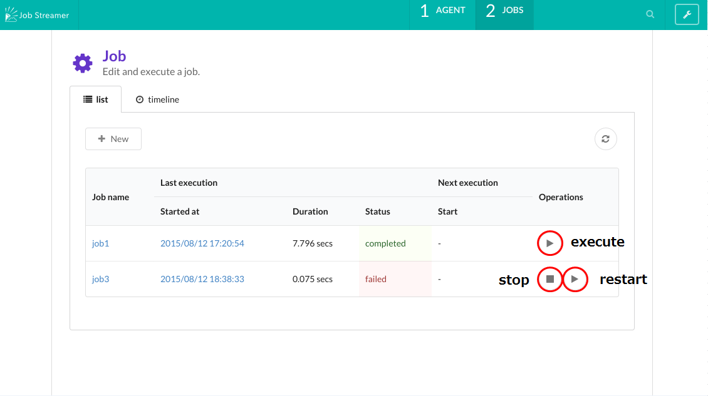
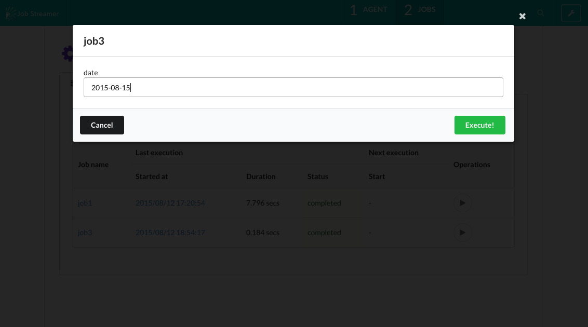
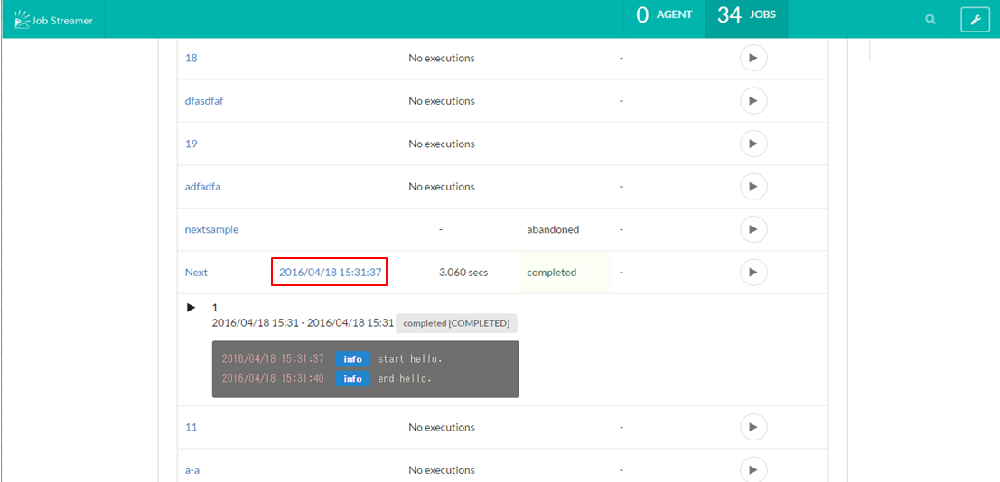

ジョブの実行
手動実行
トップ画面で一覧表示されている各ジョブの実行ボタンを押下すると、対象のジョブを手動実行できます。
停止
各ジョブの停止ボタンを押下すると、ジョブを停止できます。
リスタート
ジョブがリスタート可能（ジョブを構成する Batchlet が javax.batch.api.AbstractBatchlet.stop を実装）である場合、中断または失敗ジョブをコンソールからリスタートできます。

パラメータ指定
ジョブ作成時に Properties で EL 式によるパラメータを指定した場合、 実行・リスタート時にパラメータの入力フォームが表示されます。
各パラメータを入力し、 Execute/Restart ボタンを押すとパラメータが反映された状態でジョブが実行されます。

実行ログ参照
トップ画面上で各ジョブの開始時刻を押下すると実行ログを確認できます。

スケジューリングして実行
スケジューリング を参照してください。